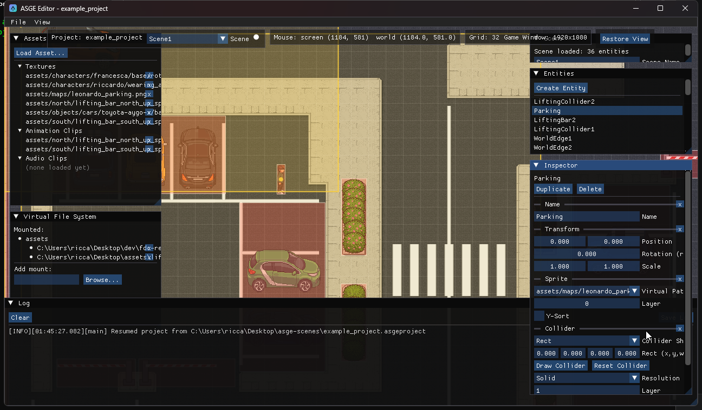

Entities & Components
Every entity in the active scene, listed on the right; click one (or the viewport) to edit it live in the Inspector below.
The Entities panel shows the active scene as a tree, each entity by name (or a stable
Entity #N fallback), with Create Entity and
Create UI Element buttons. The Inspector
below it shows one collapsible section per component the selected entity actually has, each
editing the live component directly -- no intermediate copy, no Apply step. A trailing
x on each section removes that component. Duplicate at the top copies
the entity together with everything under it and puts the copy in the same parent (so a duplicate
inside a panel takes that panel's next layout slot); Delete removes just that entity,
and any children it had become roots.

Component types
A fixed, explicit set -- not a generic reflection system. Each type gets its own
hand-written editor next to its Serializer<T> specialization:
Name / Transform
Display name; position, rotation, scale.
Sprite
Virtual texture path (picked from known assets, not typed), layer, Y-sort.
Collider
Rect/Circle shape, drawable on the viewport -- see Advanced Editing.
Camera
Zoom and follow-smoothing; previewed live in the viewport.
AudioSource
Clip path (picked from known audio), volume, loop.
Animation
Clip path, frame duration, and a Play/Stop button -- starts stopped so nothing auto-plays the moment it's added.
PathFollow
Waypoints authored on the viewport -- see Advanced Editing.
Velocity / Rigidbody
Plain physics data -- linear velocity, mass/drag.
RenderInfo
Layer, Y-sort, screen space and sort inheritance. Added automatically, once, whenever a Sprite is.
UI components
UIRect, UIButton, UILabel, UICheckbox, UISlider, UIPanel and UILayoutItem -- see UI & Layout.
Hierarchy
Entities can be parented. The Entities panel is a tree: root entities at the top level, each one's children nested underneath behind a collapsible arrow. A selected child shows a read-only Parent line above the Duplicate/Delete buttons.
New Child
Right-click a row. Creates a new entity with just a Transform, attached under that row.
Detach
Right-click a child row to make it a root again (disabled on a row that is already a root).
Remove
Right-click a row to destroy the entity and its whole subtree.
Reparent
Drag one row onto another to make it that entity's child. Dropping an entity onto itself or its own descendant does nothing.
A child's Transform is relative to its parent, so moving the parent moves everything under it. Panels with a layout also place their children -- see UI & Layout.
Disabled entities
The Disabled checkbox at the top of the Inspector turns an entity off. Disabling a parent disables everything under it, and a child that is only disabled because of its parent shows an (inherited from parent) hint. A small closed-eye icon marks a disabled row in the tree, and every ancestor of a disabled entity too, so it stays visible even when its branch is collapsed. A disabled entity's collider, camera and waypoint overlays stop drawing on the viewport.
Live editing, tracked

Every field edit, component add/remove, or entity
duplicate/delete marks the active scene dirty (the small dot next to the Scene selector) --
a scalar drag doesn't spam AssetManager::ResolveAssets on every intermediate value
the way an asset-path change does, so a continuously-dragged slider stays cheap. Adding a Sprite
or a component with an asset-path field (Animation, AudioSource) resolves it immediately, so a
newly-picked texture/clip shows up without switching selection first.